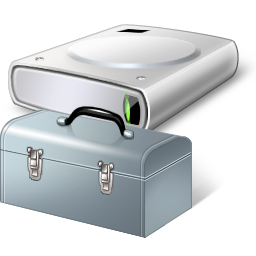

Learn About Utility Programs
Definition
Utility programs are software that supports managing the computer infrastructure including computer hardware, system software and application software.
A utility program may be a distinct program, or multiple utilities are implemented in a single program.
Commonly, a utility program provides a command-line interface, but some provide a graphical user interface.
Features of Utility Programs

Disk Management- McAfee
- WinRAR
- Disk and Storage Management - Tools for partitioning drives, defragmenting hard drives, and clearing out temporary cache/junk files.
- Data Backup and Recovery - Automated features to copy and restore critical files in case of failure.
- System Security - Integrated antivirus scanners, firewalls, and malware removal utilities to protect against digital threats.
- File Compression - Programs that shrink large files or folders (into ZIP/RAR formats) to save storage space and speed up file sharing.
Advantages and Disadvantages of Utility Programs
| Advantages | Disadvantages |
|---|---|
| Enhances overall system performance | Running too many background utility programs can slow down active applications. |
| Extends hardware lifespan by preventing software bloat and disk errors. | Improper use of advanced utilities (like registry cleaners/partition tools) can accidentally delete vital files. |
| Protects valuable data from sudden loss or corruption. | Untrusted third-party utilities can sometimes bundle adware or create security vulnerabilities. |
| Helps in data management | Some utilities may be costly |
Applications of Utility Programs in the Workplace
- System Maintenance - IT departments deploy automated disk cleanups and system updates overnight so employee workflows are never interrupted.
- Data Security - Organizations rely on antivirus and encryption utilities to protect sensitive information.
- Backup Solutions - Businesses implement automated backup utilities to ensure data continuity in case of hardware failure or cyberattacks.
- Performance Optimization - Utilities help optimize software performance, ensuring that business-critical applications run smoothly.